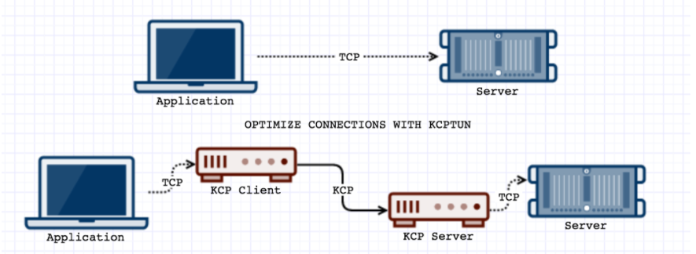
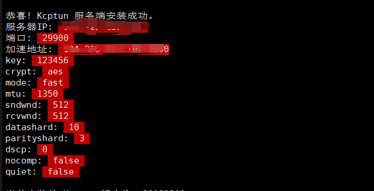
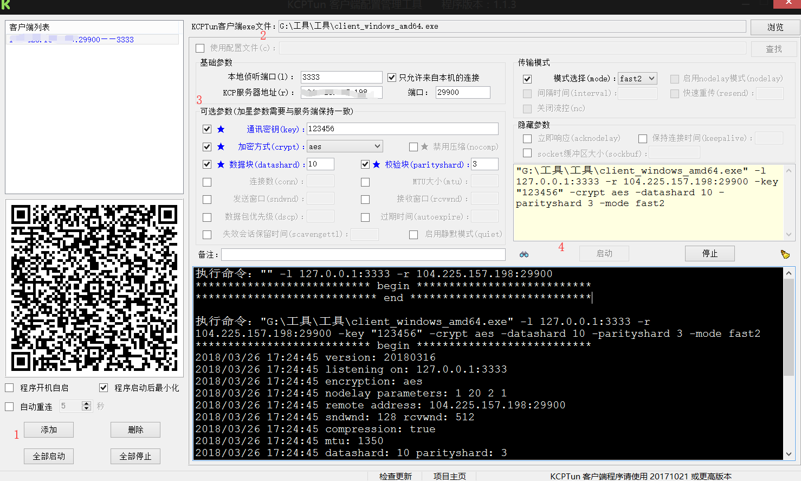

0x01 前言
因为使用SS有时候科学上网还是速度很慢，从大佬处了解到一个神器kcptun，kcptun是一个使用可信UDP来加速TCP传输速度的网络软件。 我们知道TCP协议是可信的数据流传输协议。简单来说，如果数据传输过程中发生了丢包，TCP协议会重新发送相应数据包，如果数据包到达顺序与发送顺序不一致，TCP协议会进行数据包重组，即：TCP协议可以通过控制帧来保证数据流的传输顺序和正确性。但TCP协议的控制机制比较复杂，在线路质量差导致丢包率极高时，传输效率就会指数级下降。
UDP协议是数据报协议，由于比TCP简单得多，传输效率和延迟率都要优于TCP协议，但UDP协议不是可信传输协议，不能保证数据正确与可达，所以只能应用在一些对单个数据包的正确与可达不是要求很严格（比如：IM）、但对数据传输延迟率有很高要求（比如：视频流或者多人在线游戏）的场合。
那么，有没有一种传输协议既可信又能保证传输效率呢？这就是R-UDP：可信UDP协议，一种在UDP协议基础上增加了部分TCP的控制逻辑来保证数据正确完整的协议。目前已经有很多可用库（rUDP、enet等等），虽然没有成为像TCP/UDP这样的标准协议，但已经广泛运用到了大型多人在线游戏等领域。KCPTun就是利用这种可信UDP（KCP over UDP），来大幅加速TCP传输效率的。

KCPTun官方性能实测值：从68Kbps提高到31Mbps，飞一般的感受！
0x02 服务端安装
首先需要安装好SS，然后再安装Kcptun
设置kcptun的服务端
|
|
设置加速的IP,可以设置为服务器的IP
|
|
设置SS在服务端所用的端口
设置kcptun密码：
选择加密方式
|
|
接下来的过程都可以使用默认配置
服务端安装完成

0x03 客户端安装
GUI界面
https://github.com/dfdragon/kcptun_gclient/releases/download/v1.1.3/kcptun_gclientv.1.1.3.zip
客户端
https://github.com/xtaci/kcptun/releases/download/v20180316/kcptun-windows-386-20180316.tar.gz

1.首先点击添加
2.点击浏览按钮，找到解压好的KCPTun客户端可执行文件
3.配置你所设置的内容
4.点击启动